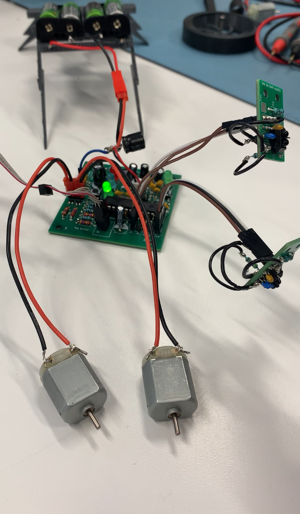
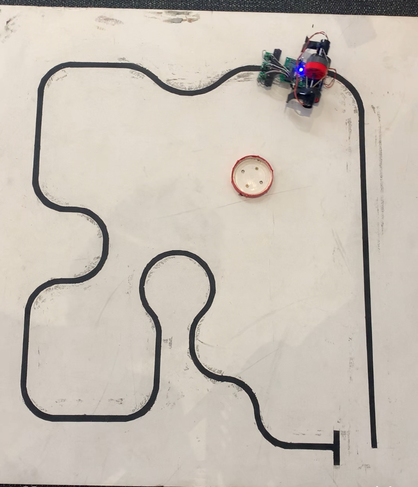
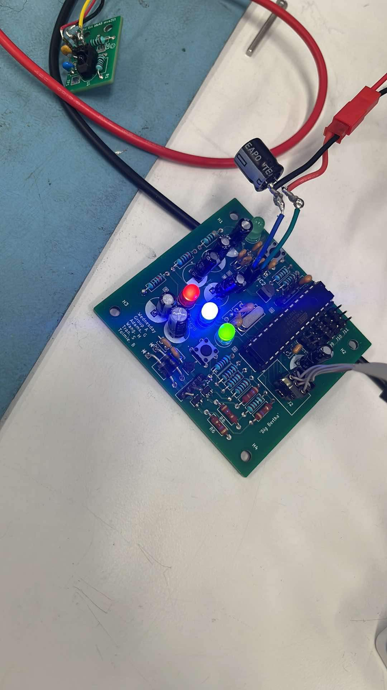
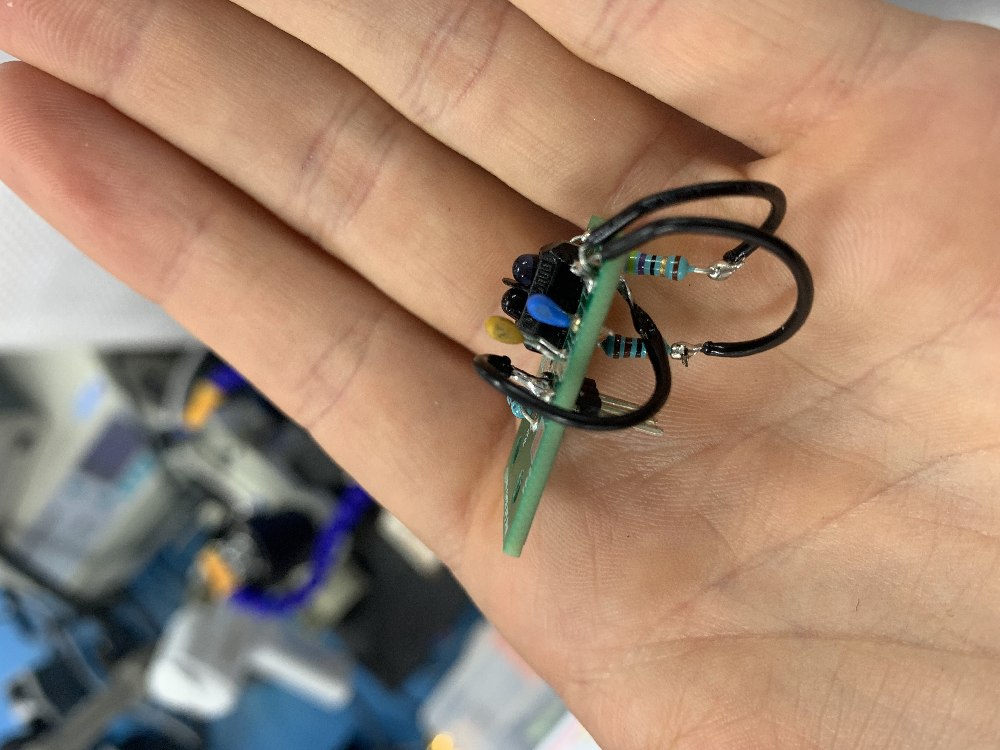

Line Following Robot
University Project
Overview
The highlight of the second year mechatronics discipline is the line following robot. This involves designing a circuit from scratch around a STM32U2 microcontroller, designing a PCB board in KiCAD, assembling it and fitting it to a custom designed chasis and drive train. The robots are raced against each other at the end of the semester, with the grade being determined by your placement.
This was one of my favourite projects, mainly because of the freedom we had. It was the first project where we weren't hand-held, and we had to figure out which components we wanted to use, how they were going to connect, and how we would make the thing move.
Our team had a great result, coming 12th out of 55 teams, with a track time of 18s.





Tools and skills
- KiCAD to design the PCB and Schematic.
- Datasheet parsing to find component data and wiring information.
- Footprint and schematic library creation.
- Circuit debugging and PCB rework.
Limitations and Improvements
- In testing, it was found that the sensor boards weren't working properly. It was found that a connection was improperly designed, which was scratched out and properly connected with external wires (image 5).
- A bulk decoupling capacitor placed after the battery wasn't designed into the PCB board. This had to be added hackily after assembly (image 4).
- If I were to do this project again, I would design a gear based drive system instead of the hot-glue on motor which rotated the rubber wheels through friction as this was very prone to failure.